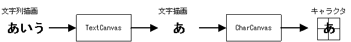
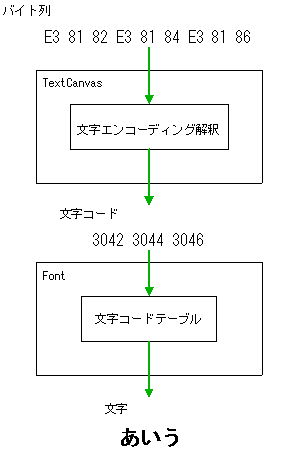

The Text String Drawing library uses the Text Character Drawing Library to draw text strings. It analyzes and arranges the text string according to the text encoding, and then draws the text string using the Text Character Drawing Library.
The Text String Drawing library draws the text strings to a virtual drawing screen called the TextCanvas. This TextCanvas holds an internal CharCanvas, and the text strings drawn in TextCanvas correspond to the text characters rendered in CharCanvas.
TextCanvas has additional parameters for text spacing and line spacing, which are required for the drawing of text strings.

The functions of the Text String Drawing library can be divided into four broad groups:
|
Building TextCanvas Functions for initializing and building TextCanvas. |
NNS_G2dTextCanvasInit |
|
TextCanvas accessors Functions for getting and setting the TextCanvas parameters. |
NNS_G2dTextCanvasGetCharCanvasNNS_G2dTextCanvasSetCharCanvasNNS_G2dTextCanvasGetFontNNS_G2dTextCanvasSetFontNNS_G2dTextCanvasGetHSpaceNNS_G2dTextCanvasSetHSpaceNNS_G2dTextCanvasGetVSpaceNNS_G2dTextCanvasSetVSpace |
|
Calculating the drawing size of a text string These functions are used to calculate the drawing size of a text string. |
NNS_G2dTextCanvasGetStringWidthNNS_G2dTextCanvasGetTextWidthNNS_G2dTextCanvasGetTextHeightNNS_G2dTextCanvasGetTextRect |
|
Text string drawing Functions for drawing text strings to TextCanvas. |
NNS_G2dTextCanvasDrawStringNNS_G2dTextCanvasDrawTextNNS_G2dTextCanvasDrawTextRectNNS_G2dTextCanvasDrawTaggedText |
Based on these classifications and the classifications of the Character Drawing library functions, the flow for drawing of a text string looks like this:
(1) Build CharCanvas using the build functions. Configure the screen and OAM settings using the configuration functions.
As an alternative, construct a cell using the cell-building functions. (2) Build TextCanvas using the TextCanvas building functions. (3) Clear CharCanvas using the fill functions. (4) Draw text string using the test-string drawing functions. From this point, only repeat steps (3) and (4) when required. (5) If a cell was built in (1), draw the cell using the renderer.
The text encoding that TextCanvas can handle depends on the font that is being used. The functions take a text string as the argument, but this can be changed to a wide string by defining the NNS_G2D_UNICODE macro. However, in order to display wide strings, you also need to use a font that uses UTF-16 encoding. Conversely, if you want to display Shift_JIS and UTF-8 text you need to use fonts that use those types of encoding, even if NNS_G2D_UNICODE is not defined.

07/12/2005 Added a case for when using cells.
05/25/2005 Initial version.